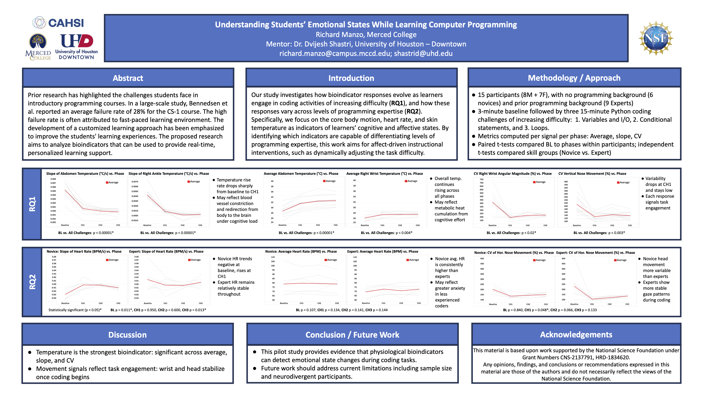

Undergraduate Research Assistant
- Analyze biometric datasets of more than 100 million records to understand how students respond emotionally in programming environments.
- Build Tableau visualizations that reveal behavioral patterns across motion, heart rate, and temperature.
- Work directly with faculty on data-driven interventions to improve how computer science is taught.
